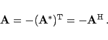
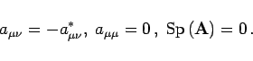
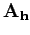
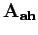
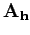
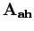
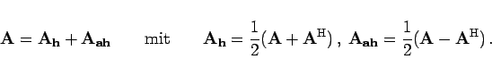

Antihermitesche Matrix oder schiefhermitesche Matrix wird eine quadratische Matrix genannt, die gleich ihrer negativen Adjungierten ist:
|  | (4.15a) |
Für die Elemente  und die Spur einer schiefhermiteschen Matrix gilt
und die Spur einer schiefhermiteschen Matrix gilt
|  | (4.15b) |
Man kann jede quadratische Matrix  als Summe aus einer hermiteschen Matrix  und einer antihermiteschen Matrix  darstellen:
als Summe aus einer hermiteschen Matrix  und einer antihermiteschen Matrix  darstellen:
|  | (4.15c) |